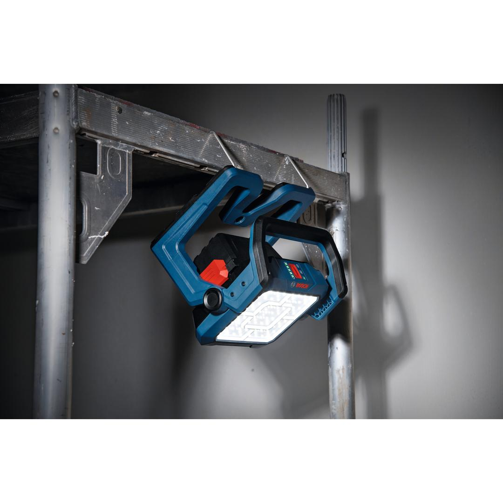
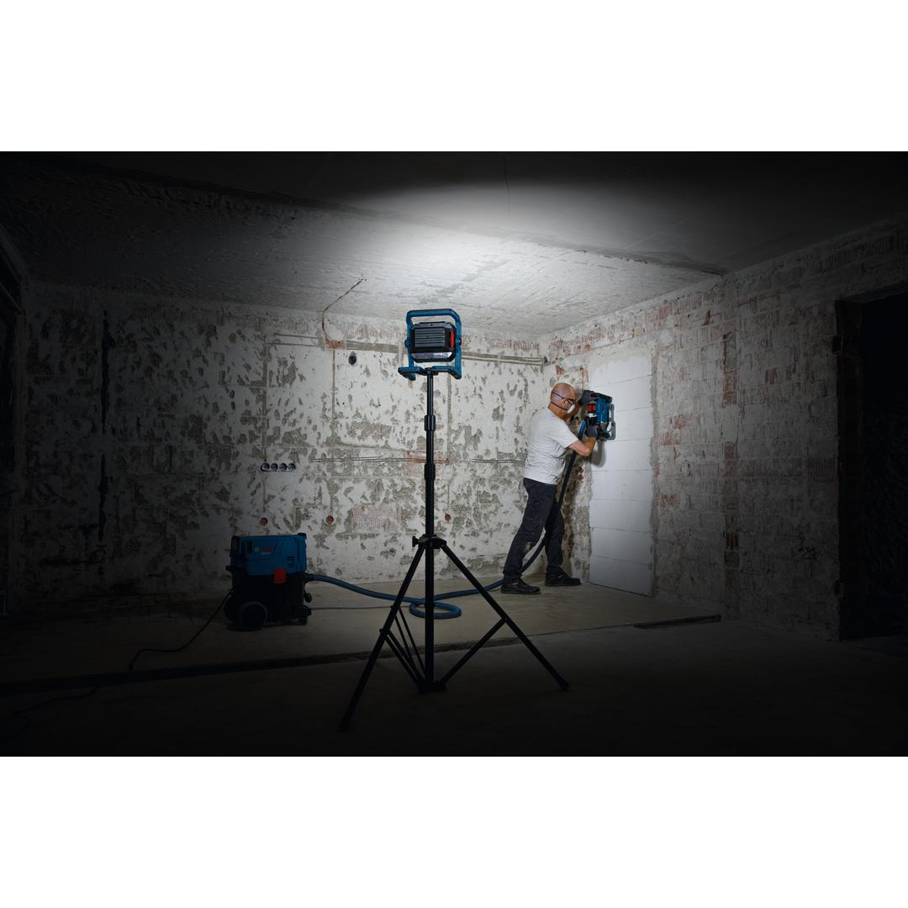
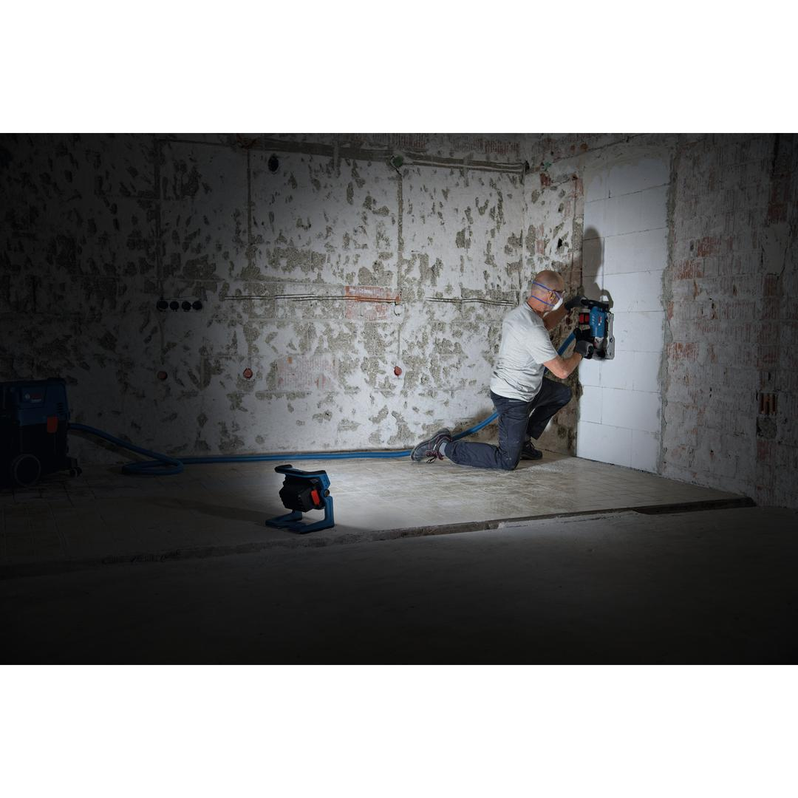
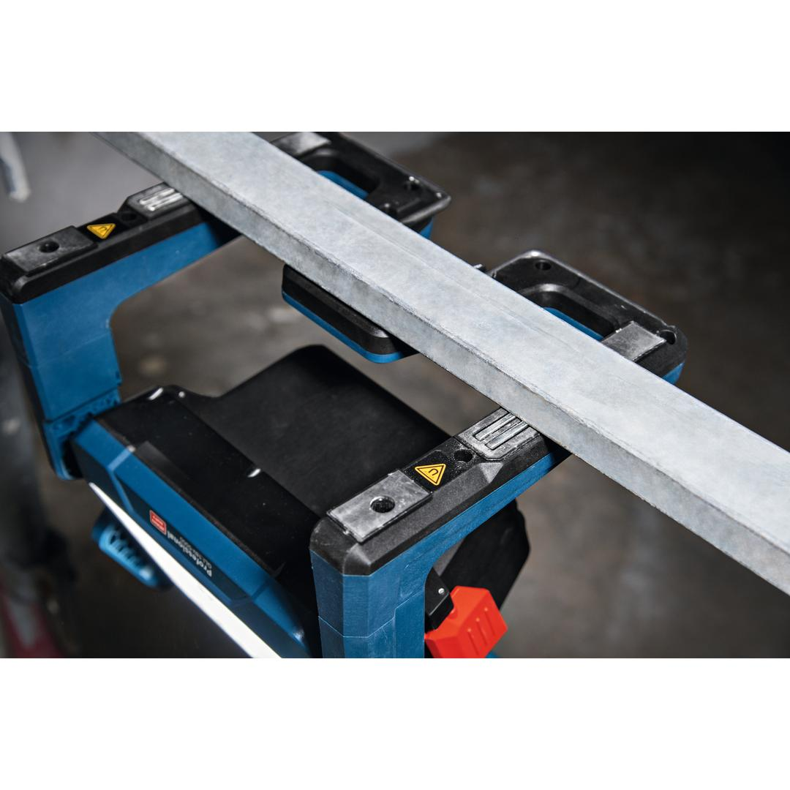
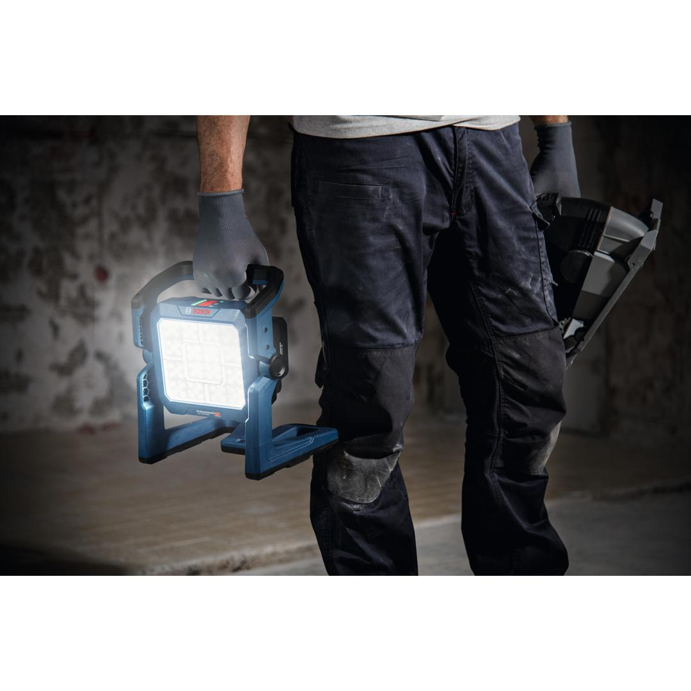
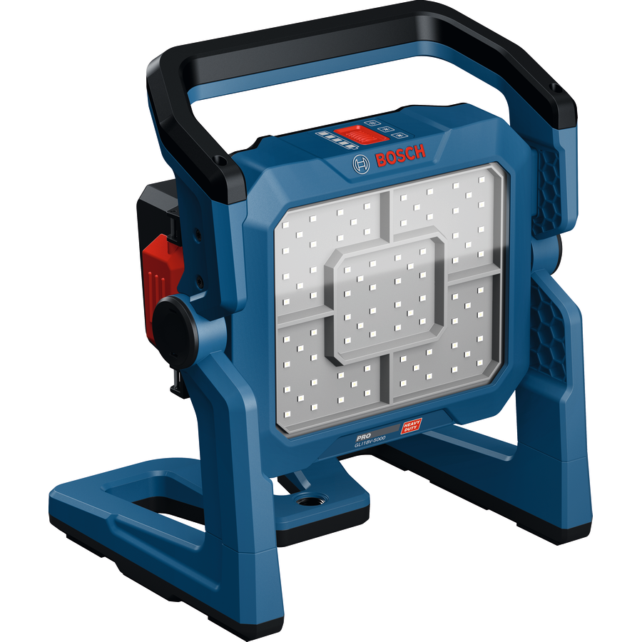

06019P5100






| Tool dimensions (width) |
265 mm |
| Tool dimensions (length) |
215 mm |
| Tool dimensions (height) |
310 mm |
| Battery voltage, works with |
18.0 V |
Versatile floodlight with 5000 lumens
The PRO GLI18V-5000 provides excellent illumination of the working area. With 3 brightness levels, the 80 LEDs can be adjusted up to 5000 lumens. The floodlight’s compact design with its strong magnet, 5/8” tripod thread, and metal hooks offer you maximum versatility. Its seamless 135° tilt light head helps you to bring light to every corner, while the single-button control makes it easy to use. It is splash-proof and dust-tight thanks to an IP 54-rated, robust battery cover. It features a User Interface with brightness indication and charge level indicator.
The PRO GLI18V-5000 illuminates medium- to large-sized work areas. Compatible with the Bosch Professional 18V System and with the multi-brand battery alliance AMPShare.